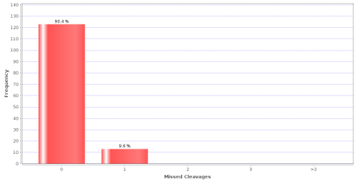

Explanation
A histogram representing the percentage of peptides in the experiment with a different number of missed tryptic cleavages in peptides. This graph is only applicable to experiments where trypsin is used. Two assumptions were made for these calculations: first, the enzyme used in the experiment is trypsin; second, the cleavage rule used by the enzyme is “C-terminal side of K or R except if P is C-term to K or R. This chart can be used to compare several experiments where the same number of missed cleavages has been used as a parameter for the search, and the same experimental conditions used. Then a dramatic change in the shape of the chart could mean a change in the efficiency of the trypsin used (though many other factors can also be the reason for it such as change in the parameters of the search engine, database size and other experimental causes).
In a more practical way, this chart has two immediate applications: first, checking that the search engine is working correctly and the number of missed cleavages found in the identified peptides matches with the "missed cleavages" parameters used in the search engine. Second, knowing the distribution of this chart, the researcher can adjust the number of missed cleavages used in future searches: e.g. maybe the use of 4 missed cleavages instead of 1 is producing only a 0.1% increase in peptide identifications with searches 10 times longer.
This is an example with only about 10% of the peptides containing one missed cleavage.